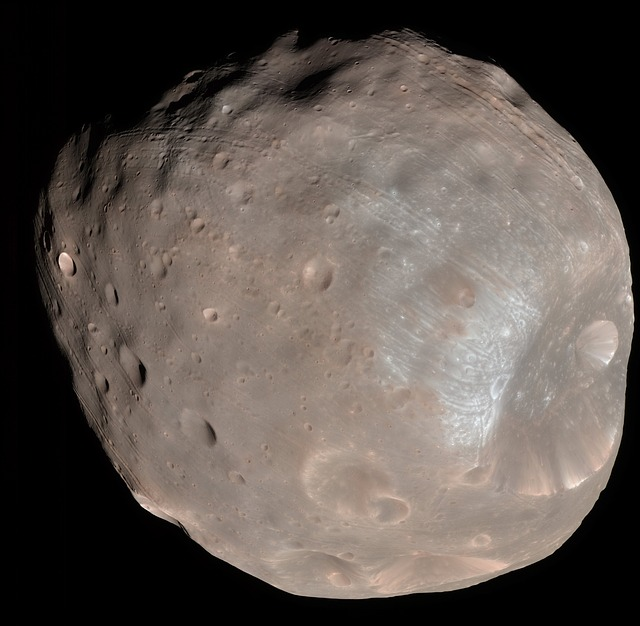

Mars has two moons, Phobos and Deimos. Both are believed to be captured asteroids.
1. Phobos

Phobos is the larger of Mars' two moons. It orbits Mars three times a
day, and is so close to the planet's surface that in some locations on
Mars it cannot always be seen. Phobos is nearing Mars at a rate of six
feet (1.8 meters) every hundred years. At that rate, it will either
crash into Mars in 50 million years or break up into a ring.
Phobos is a small, irregularly shaped object with a mean radius of 11 km
(7 mi).[5] Phobos orbits 6,000 km (3,700 mi) from the Martian surface,
closer to its primary body than any other known planetary moon. It
orbits Mars much faster than Mars rotates and completes an orbit in just
7 hours and 39 minutes.[9] As a result, from the surface of Mars it
appears to rise in the west, move across the sky in 4 hours and 15
minutes or less, and set in the east, twice each Martian day.
2. Deimos

Deimos is the smaller of Mars' two moons. It orbits Mars whirls around
Mars every 30 hours.Deimos was discovered by Asaph Hall III at the
United States Naval Observatory in Washington, D.C., on 12 August 1877,
at about 07:48 UTC.[a] Hall, who also discovered Phobos shortly
afterwards, had been specifically searching for Martian moons at the
time.
The moon is named after Deimos, a figure representing dread in Greek
mythology.[10] The name was suggested by academic Henry Madan, who drew
from Book XV of the Iliad, where Ares (the Roman god Mars) summons Dread
(Deimos) and Fear (Phobos).
10 Need To Know About The Mars Moon
1.
Phobos and Deimos are among the smallest moons in the solar system
Mars is named after the Roman god of war, while its moons, Phobos and Deimos, are named after the horses that pulled the chariot of the god himself.
2.
Phobos and Deimos are similar to Earth's Moon
Just like our moon, the Martian moons always present only one side of their face towards the Red Planet. Both these satellites are lumpy, heavily-cratered, and covered in dust and loose rocks.
3.
Phobos and Deimos could have been discovered much later
Though the American astronomer Asaph Hall discovered and named the two moons, he was about to give up his search for them. Luckily, his wife, Angelina, urged him on.
4.
The Martian moons have an unusual orbit
Phobos orbits Mars at a distance of only 6.000 km / 3.600 mi. Currently, no known moon orbits so close to its parent planet. It whips around Mars around three times a day.
5.
Phobos will one day collide with Mars
Since it is the moon with the closest orbit towards its parent planet, Phobos’s fate is quite interesting.
6.
Phobos and Deimos moons can be used as a base for astronauts
If someone stood on the Mars-facing side of Phobos, Mars would take up the majority of the sky view. Scientists believe that people will experience this one day.
7.
The Martian moons are among the darkest objects in the solar system
Both moons appear to be made of carbon-rich rock mixed with ice.
8.
The Martian moons origin is currently unknown
Since they have irregular shapes and strange compositions, many scientists believe that the Martian moons are asteroids.

9.
Phobos and Deimos may have had a violent birth
Much like Earth’s moon, a collision could have blown chunks of Mars into space, and gravity may have pulled them together into the moons.
10.
The moons are hard to explore
Several spacecraft have snapped pictures of the Martian moons during their flybys. The first machine to do this was NASA’s Mariner 9 spacecraft, which orbited the planet in 1971.